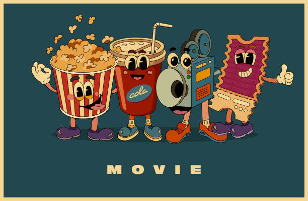

Field or Career
I am currently a freshman at the University of Pittsburgh. My intended major is biology, and I am on the pre-med track. My dream is to become a physician. I want a career where I can make the most of my aptitude and work ethic; one where I can improve peoples’ quality of life. I do not yet know what type of doctor I would like to be, but I know for certain that I do not want to become a surgeon. My family is also a big part of my life. I love my mom, my dad, my younger brother, my younger sister, and my cat and dog a lot.
Additionally, I like movies—watching them with my family and friends is one of my favorite pastimes—which is why, for my encomium essay, I chose “The Matrix” as my artifact. Although the dystopian genre is not my favorite—I like thrillers and romantic-action movies—I still enjoyed analyzing it for my essay. Outside of my friends and family, I tend to dedicate a lot of time to studying. I consider myself a good student and I know that the career I have chosen to pursue is going to take plenty of work and schooling, but it is my dream, and I am determined to succeed.

Encomium: The Matrix

My encomium centers around the movie “The Matrix.” It explores how parallels can be drawn between the dystopian world of “The Matrix” and our world. Mostly, this essay demonstrates how the movie does a good job highlighting why AI should not have (solely) positive connotations.
Pets

As mentioned in the introduction, I have two pets: a cat and a dog. My cat’s name is Bella and my dog’s name is Freckles (we did not get to choose the name). Bella is a typical cat: she loves to play; she likes to hunt, although she is not gifted at it; and she likes to sit on laps—she’s not good at this either. Freckles, however, is a trained service dog, and he is very well behaved. He follows commands without hesitation, but when he is not working, he is as playful as any other dog. They are both very sweet, and I miss them a lot now that I am at college.
Hobbies
Outside of watching movies and studying, I have a few hobbies. One of them is baking. I love to decorate cakes and make cookies. Some of my favorite things to create are black and white cookies, lemon cookies, strawberry bread, banana bread, chocolate cake, lemon cake, cupcakes, and apple pie (with a lattice top). I also enjoy doing origami. I find it to be relaxing, and I like the feeling of accomplishment that I get when I am done. I mostly focus on making animals and flowers, but I have also made pumpkins and ghosts (for Halloween). My favorite animals to make are monkeys and parrots because they look complicated but are not very difficult to create. Some of my other hobbies include reading, drawing (I am an a
rmature), and collecting Legos (I have a whole bookshelf full of them at home). I think that it is important for me to maintain these hobbies because it is crucial to have a good balance between work and fun/relaxing activities.